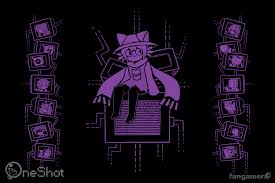

hello.
Main (You're here!)
About Me
Get To School: 7
Niko Clicker
Click any of the buttons above to find things to do other than listening to me talking.
or click the about me button to listen to me talking more.
